什么是UDF？
UDF的全称是User-Defined-Functions
Hive中一共有三种UDF
UDF（User-Defined Function）：输入一行，输入一行，1->1
UDAF（User-Defined Aggregation Function）：输入N行，输出一行，N->1
UDTF（User-Defined Table-generating Function)：输入一行，输出N行，1->N
一切都是UDxF
内置操作符（本质上是一个UDF）
加、减、乘、除、等号、大于、小于……
内置UDF
常用数学操作，常用内符串操作……
常用日期操作……
内置UDAF
Count, sum , avg …
内置UDTF
Explode
自定义UDxF
https://cwiki.apache.org/confluence/display/Hive/LanguageManual+UDF
UDF源码举例
一个简单的加号 1+2.5
https://www.codatlas.com/github.com/apache/hive/master/ql/src/java/org/apache/hadoop/hive/ql/udf/generic/GenericUDFOPPlus.java
类型转换 cast(1.5 as string)
https://www.codatlas.com/github.com/apache/hive/master/ql/src/java/org/apache/hadoop/hive/ql/udf/UDFToString.java?line=120
返回字符串长度 length(s)
https://www.codatlas.com/github.com/apache/hive/master/ql/src/java/org/apache/hadoop/hive/ql/udf/UDFLength.java
PTF是一种特殊的UDF
https://www.codatlas.com/github.com/apache/hive/master/ql/src/java/org/apache/hadoop/hive/ql/udf/generic/GenericUDFLead.java
https://www.codatlas.com/github.com/apache/hive/master/ql/src/java/org/apache/hadoop/hive/ql/udf/generic/GenericUDFLeadLag.java?line=35
用于窗口函数的计算
UDF存在下列Operator中
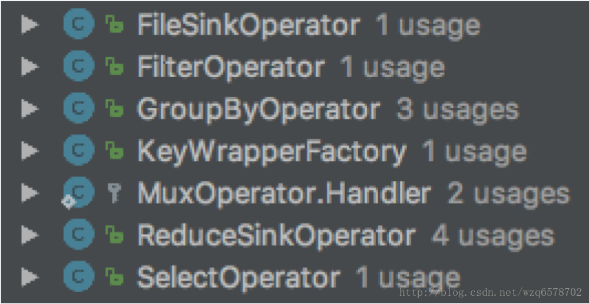
演示
https://cwiki.apache.org/confluence/display/Hive/HivePlugins#HivePlugins-CreatingCustomUDFs
UDAF
UDAF用于聚合
存在于GroupByOperator -> GenericUDAFEvaluator
思考：为什么Group By Operator即有ExprNodeEvaluator又月GenericUDAFEvaluator?
https://www.codatlas.com/github.com/apache/hive/master/ql/src/java/org/apache/hadoop/hive/ql/exec/GroupByOperator.java
UDAF源码举例
通用接口
https://insight.io/github.com/apache/hive/blob/master/ql/src/java/org/apache/hadoop/hive/ql/udf/generic/GenericUDAFEvaluator.java?line=70
当中有四种模式：
1 | /** |
回忆一下Group By执行的四种模式
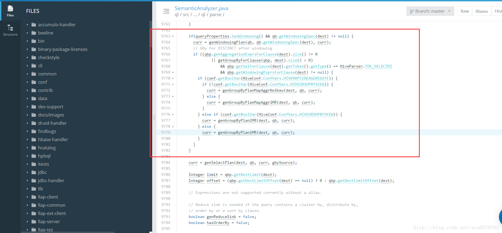
对应一下UDAF四种模式
自定义UDAF
https://cwiki.apache.org/confluence/display/Hive/GenericUDAFCaseStudy
写Resolver
写Evaluator
getNewAggregationBuffer()
iterate()
terminatePartial()
merge()
terminate()
UDTF
UDTF用于行转列、拆分行、生成小表
存在于UDTFOperator
https://www.codatlas.com/github.com/apache/hive/master/ql/src/java/org/apache/hadoop/hive/ql/exec/UDTFOperator.java
1 | @Override |
1 | /** |
经常会与LateralView一起使用
为什么？单独生成小表是无意义的
会将生成的小表和原来的表进行join
Lateral View
把某一列拆分成一个小表
把拆出来的小表作为一个视图
用这个视图和原表作Join (Map Join)
https://cwiki.apache.org/confluence/display/Hive/LanguageManual+LateralView
Lateral View源码和执行计划
https://insight.io/github.com/apache/hive/blob/master/ql/src/java/org/apache/hadoop/hive/ql/exec/LateralViewJoinOperator.java?line=43
逻辑执行计划：
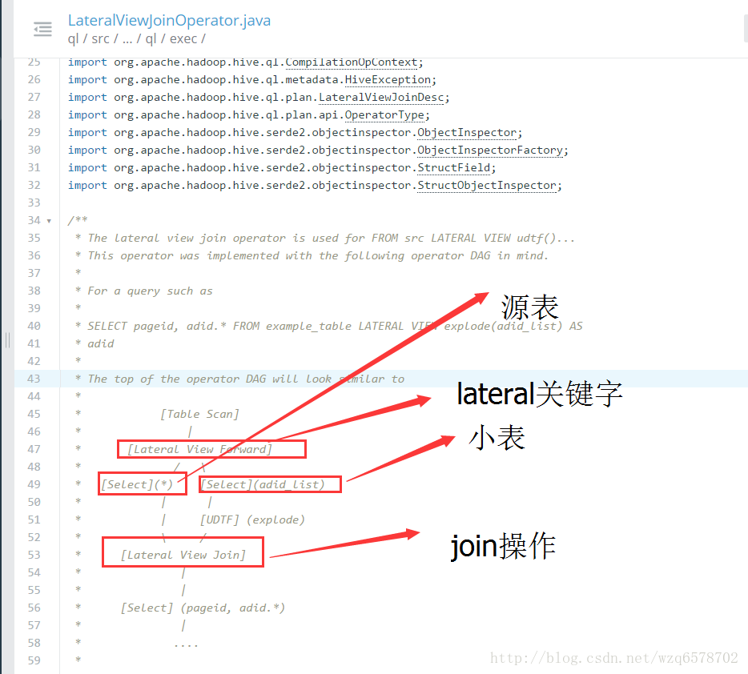
1 | @Override |
如，一些价格，以逗号分隔，存储在一个字段中
自定义UDTF
https://cwiki.apache.org/confluence/display/Hive/DeveloperGuide+UDTF
比UDAF要简单很多
Transform
与UDTF类似，只是以自定义脚本的形式，编写
适合语言控，比如我特别喜欢Python或者特别喜欢Ruby，但并不推荐
https://cwiki.apache.org/confluence/display/Hive/LanguageManual+Transform
为什么不推荐呢看源码
Transform源码分析
https://www.codatlas.com/github.com/apache/hive/master/ql/src/java/org/apache/hadoop/hive/ql/exec/ScriptOperator.java
hive默认的分隔符是”ctra+a”，倘若每行数据里边有tab分隔符，那么数据就会错乱，线程也会错乱。所以我们要在数据之中没有类似tab这样的分隔符的时候才能使用Transform不会出错。
1 | 。。。。。。。。。。。略 |
Hive流程 – 回顾
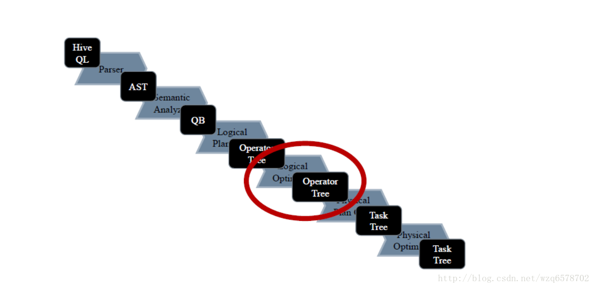
Optimizer其实优化器的调用者：
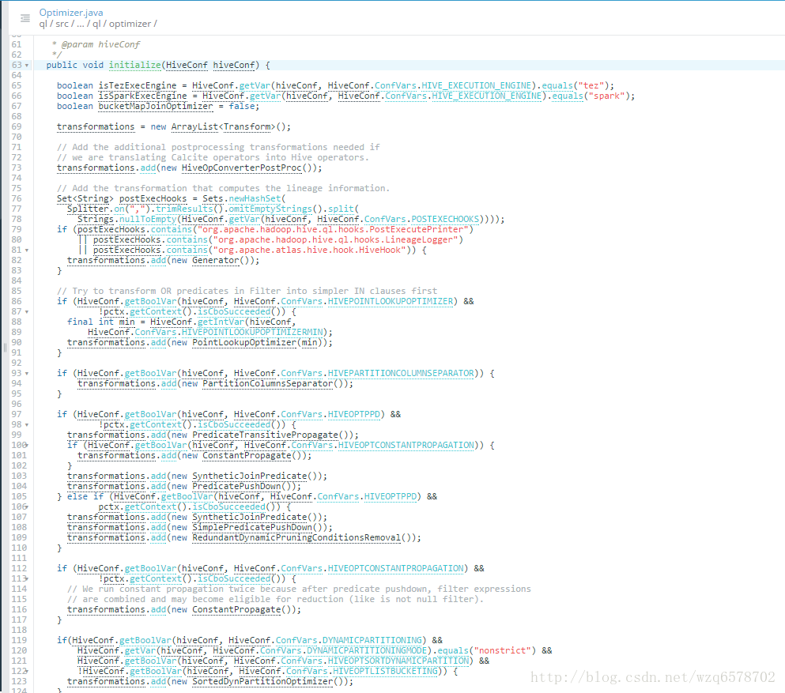
基于规则的优化的执行
根据配置初始化一个规则列表，然后一条规则一条规则地执行
把根据QB生成的逻辑执行计划改写成新的逻辑执行计划
https://www.codatlas.com/github.com/apache/hive/master/ql/src/java/org/apache/hadoop/hive/ql/optimizer/Optimizer.java?line=240
1 | /** |
基于规则的优化的执行
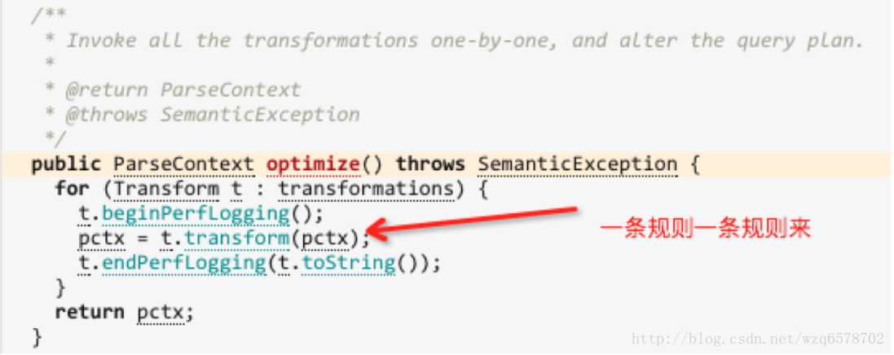
demo 1： 简单谓词下推优化器
https://insight.io/github.com/apache/hive/blob/master/ql/src/java/org/apache/hadoop/hive/ql/ppd/SimplePredicatePushDown.java?line=55
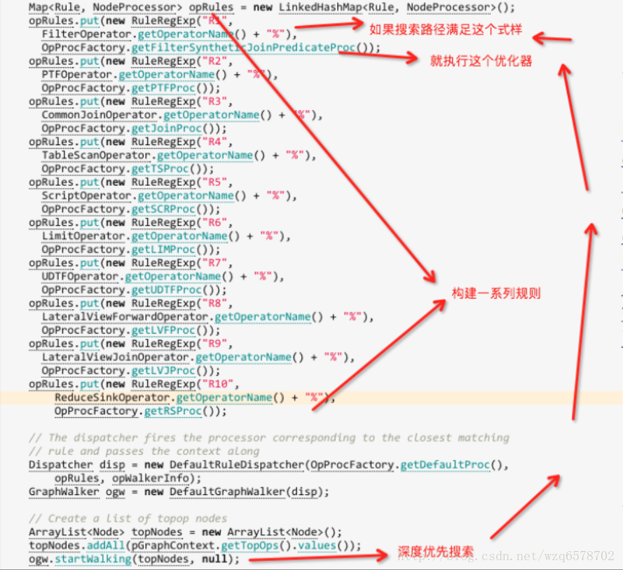
demo 2： ReduceSinkDeDuplication
https://insight.io/github.com/apache/hive/blob/master/ql/src/java/org/apache/hadoop/hive/ql/optimizer/correlation/ReduceSinkDeDuplication.java?line=94
去重优化器，减少map作业数
1 | // If multiple rules can be matched with same cost, last rule will be choosen as a processor |
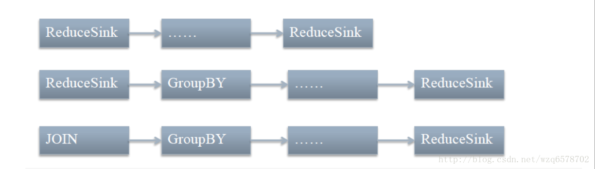
demo 3： JoinReorder
我们建议小表放在左边，大表放在右边，但是没有这种情况下，
虽然大表要放右边，有了JoinReorder，大表就可以放左边了JoinReorder可以改写成这样的形式来优化。这种优化需要打开开关。
为什么？看代码
https://www.codatlas.com/github.com/apache/hive/master/ql/src/java/org/apache/hadoop/hive/ql/optimizer/JoinReorder.java?line=40
只能是大表，不能是大的子查询
思考：为什么？
所以，打开这个开关时，简单查询是不需要小表放左边的
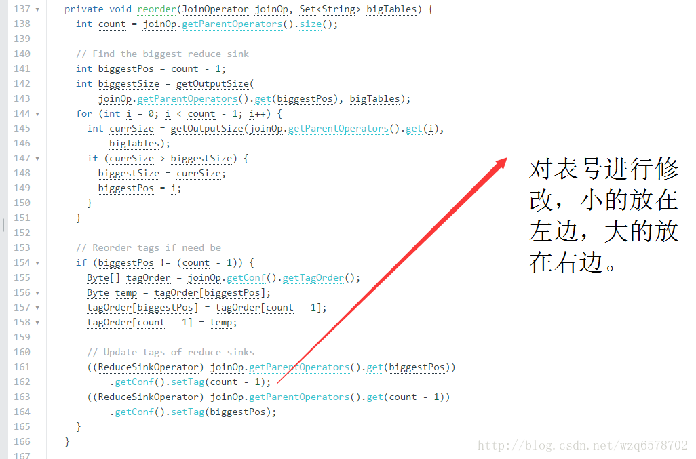
我们看一下这个开关：
https://insight.io/github.com/apache/hive/blob/master/ql/src/java/org/apache/hadoop/hive/ql/optimizer/Optimizer.java?line=186
1 | if (HiveConf.getBoolVar(hiveConf, HiveConf.ConfVars.NWAYJOINREORDER)) { |
https://insight.io/github.com/apache/hive/blob/master/common/src/java/org/apache/hadoop/hive/conf/HiveConf.java?line=3353
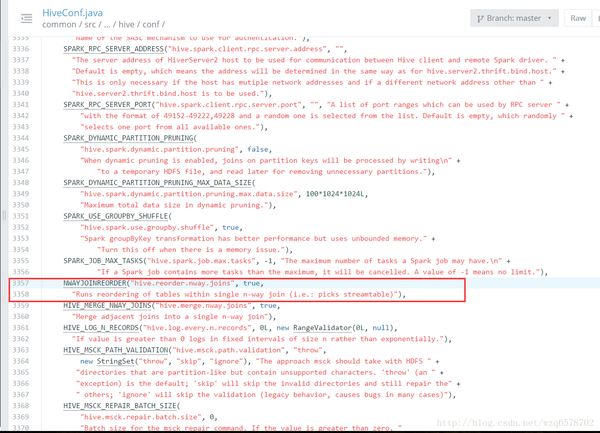
默认情况是开发，但是只能是表，不能是子查询。
更多优化器
更多优化器请根据Optimizer的代码自行阅读
如果作为一个用户，只需要知道优化器的作用即可
如果是源码程序员，可尝试手动写一个优化器
Hive流程 – 回顾
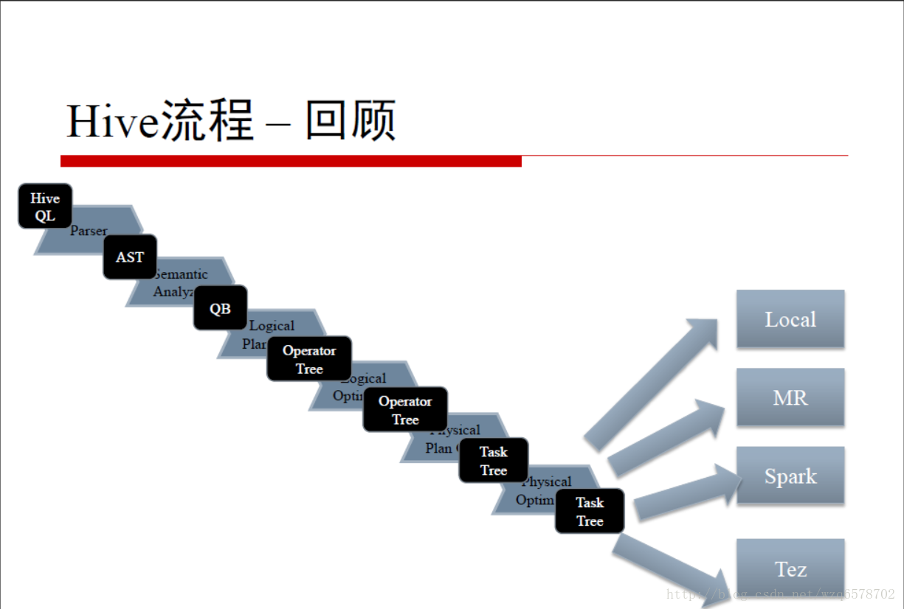
Hive执行引擎
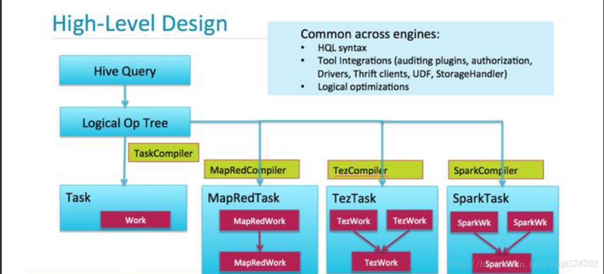
执行引擎
四种执行引擎
Local
MapReduce
Spark
https://cwiki.apache.org/confluence/display/Hive/Hive+on+Spark%3A+Getting+Started
Tez
https://cwiki.apache.org/confluence/display/Hive/Hive+on+Tez
Tez + LLAP
代码部分
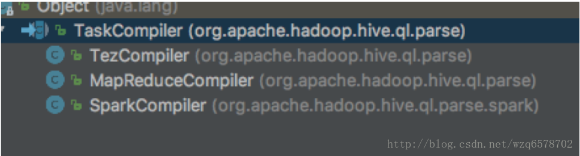
物理执行引擎生成一个TaskCompiler，TaskCompiler会对不同的执行引擎，比如spark，tez、mr等执行不同的物理计划编译器，local是mapreduce（四个线程做map，一个线程做reduce）。
https://www.codatlas.com/github.com/apache/hive/master/ql/src/java/org/apache/hadoop/hive/ql/parse/TaskCompiler.java?line=87
Hive流程 – 我们还没介绍的
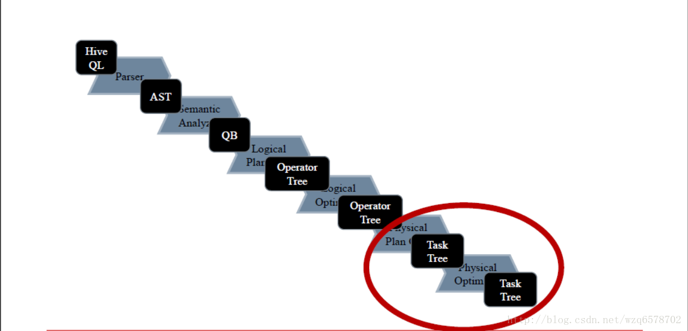
逻辑执行计划生成物理执行计划，而物理执行计划是如何调整的。